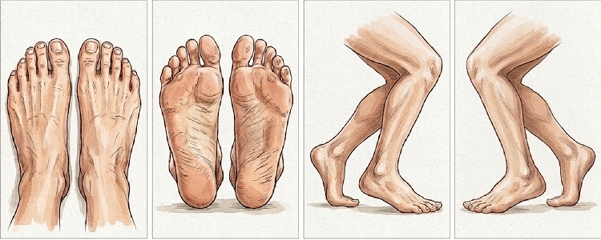

Detayları görmek için sol taraftan bir hasta seçin.
-
-
Laboratuvar
Sınıflama (Wagner)
Yara Özellikleri
Tedavi Özgeçmişi
AKİ
Kültür / Antibiyotik
Görüntüleme Bulguları
Tedavi Planı

Marker Ekle
Boyut
Renk
0/0
-
Tarihe Göre Değerlendirmeler
Henüz bir değerlendirme notu girilmedi.
Laboratuvar
Sınıflama (Wagner Sınıflandırması)
Yara Özellikleri
Tedavi Özgeçmişi
Ayak Bileği Kol İndeksi (AKİ)
Kültür / Antibiyotik Tedavi
Görüntüleme Bulguları
Planlanan Tetkik ve Tedavi
Henüz geliş kaydı yok.
Henüz fotoğraf eklenmedi.
Hasta Hesapla Sonuçları
Hasta Bazında Gelişler
Not Ekle
Hazır Not Butonları Ayarları
Bu başlık için henüz hazır not butonu eklenmedi.
Wagner Sınıflandırması — Evre Seç
Çekim Tarihi
-
Bu işaretlemeyi seçili fotoğraftaki mevcut işaretlemenin üzerine mi eklemek istiyorsunuz, yoksa yeni bir işaretleme (yeni fotoğraf) mi oluşturmak istiyorsunuz?